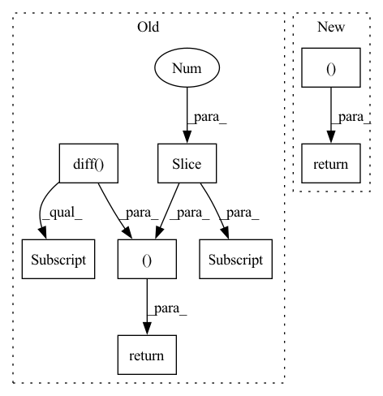

Pattern ID :31839

Before Change
// ddx = torch.diff(torch.diff(x, dim=0), dim=0)[88:268]
y = self.y_data[index]
dy = torch.diff(y, dim=0)[89:269]
ddy = torch.diff(torch.diff(y, dim=0), dim=0)[88:268]
"""
size[index][0] = np.min(diastolic list)
size[index][1] = np.max(systolic list)
"""
d = self.size[index][0]
s = self.size[index][1]
// m = self.size[index][2].to("cuda")
return x, y, dy, ddy, d, s
def __len__(self):
return self.len
After Change
o = self.ohe[index]
// m = self.size[index][2].to("cuda")
return x, y, d, s, m, info, o
def __len__(self):
return self.len
In pattern: SUPERPATTERN
Frequency: 3
Non-data size: 8
Instances
Fragment ID: 93072461
Project Name: tvs-ai/pytorch_rppgs
Commit Name: 2f8ae9596d527f46726b01a17ad81e601913b3b3
Time: 2023-02-05
Author: forownsake@gmail.com
File Name: vid2bp/BPNetDataset.py
M Class Name: BPNetDataset
N Class Name: BPNetDataset
M Method Name: __getitem__(2)
N Method Name: __getitem__(2)
M Parent Class: Dataset
N Parent Class: Dataset
M File Name: vid2bp/BPNetDataset.py
N File Name: vid2bp/BPNetDataset.py
M Start Line: 18
M End Line: 34
N Start Line: 18
N End Line: 31
'>
Before Change
def __getitem__(self, index):
x = self.x_data[index][0].to("cuda")
dx = torch.diff(x, dim=0)[89:269]
// torch.cat((torch.diff(x), torch.zeros(1).to("cuda:0")))
ddx = torch.diff(torch.diff(x, dim=0), dim=0)[88:268]
// x = (self.x_data[index] - torch.mean(self.x_data[index])) / torch.std(self.x_data[index]).to("cuda")
// x_size = torch.mean(self.x_data[index]).to("cuda")
// if x_size < 0.5:
// size_class = 1
// elif x_size < 1.0:
// size_class = 2
// elif x_size < 1.5:
// size_class = 3
// elif x_size < 2.0:
// size_class = 4
// else:
// size_class = 5
y = self.y_data[index].to("cuda")
dy = torch.diff(y, dim=0)[89:269]
ddy = torch.diff(torch.diff(y, dim=0), dim=0)[88:268]
"""
size[index][0] = np.min(diastolic list)
size[index][1] = np.max(systolic list)
"""
d = self.size[index][0].to("cuda")
s = self.size[index][1].to("cuda")
// m = self.size[index][2].to("cuda")
return x, dx, ddx, y, dy, ddy, d, s
def __len__(self):
return self.len
After Change
s = self.size[index][1]
// m = self.size[index][2].to("cuda")
return x, y, dy, ddy, d, s
def __len__(self):
return self.len
'>
Fragment ID: 93072463
Project Name: tvs-ai/pytorch_rppgs
Commit Name: 0b39906dfe08b771b61ca5df0583a35d9302ea02
Time: 2023-01-20
Author: forownsake@gmail.com
File Name: vid2bp/BPNetDataset.py
M Class Name: BPNetDataset
N Class Name: BPNetDataset
M Method Name: __getitem__(2)
N Method Name: __getitem__(2)
M Parent Class: Dataset
N Parent Class: Dataset
M File Name: vid2bp/BPNetDataset.py
N File Name: vid2bp/BPNetDataset.py
M Start Line: 18
M End Line: 45
N Start Line: 18
N End Line: 34
'>
Before Change
//
def get_derivative(input_sig):
vpg = np.append(np.diff(input_sig, axis=0), input_sig[-1] - input_sig[-2])
apg = np.append(np.diff(vpg, axis=0), vpg[-1] - vpg[-2])
return vpg, apg
def channel_cat(input_sig):
vpg, apg = get_derivative(input_sig)
input_sig = np.expand_dims(input_sig, axis=0)
After Change
def get_derivative(input_sig):
velocity = np.append(input_sig[1:], input_sig[-1]) - input_sig
smoothed_vel = gaussian_filter1d(velocity, sigma=3)
acceleration = np.append(smoothed_vel[1:], smoothed_vel[-1]) - smoothed_vel
smoothed_acc = gaussian_filter1d(acceleration, sigma=3)
// smoothed_vel4 = gaussian_filter1d(smoothed_vel, sigma=4)
// acc4 = np.append(smoothed_vel4[1:], smoothed_vel4[-1]) - smoothed_vel4
// smoothed_acc4 = gaussian_filter1d(acc4, sigma=4)
// acceleration = np.append(velocity[1:], velocity[-1]) - velocity
// f_cubic = interp1d(np.arange(input_sig.shape[0]), velocity, kind="cubic")
// y_smoothed0 = gaussian_filter1d(velocity, sigma=1)
// y_smoothed1 = gaussian_filter1d(velocity, sigma=1.5)
// y_smoothed2 = gaussian_filter1d(velocity, sigma=2)
// y_smoothed3 = gaussian_filter1d(velocity, sigma=2.5)
// y_smoothed4 = gaussian_filter1d(velocity, sigma=3)
// y_smoothed5 = gaussian_filter1d(velocity, sigma=3.5)
// y_smoothed6 = gaussian_filter1d(velocity, sigma=4)
// acc_smooted6 = gaussian_filter1d(acceleration, sigma=4)
// for i in range(1, 7):
// plt.plot(eval(f"y_smoothed{i}"))
// plt.show()
// ple_temp[-1] = np.mean(ple_temp[-3:-2])
// vpg = np.append(np.diff(input_sig, axis=0), input_sig[-1] - input_sig[-2])
// apg = np.append(np.diff(vpg, axis=0), vpg[-1] - vpg[-2])
// lpf = LowPassFilter(3.0, 1.0)
// l_velocity = lpf.filter(velocity)
// l_acceleration = lpf.filter(acceleration)
// cubic_velocity = f_cubic(np.arange(input_sig.shape[0]))
// s_velocity = signal_smoothing(velocity)
return smoothed_vel, smoothed_acc
def channel_cat(input_sig, scale=True):
if scale:
min_max_scaler = MinMaxScaler(feature_range=(1, 3))
'>
Fragment ID: 93072467
Project Name: tvs-ai/pytorch_rppgs
Commit Name: 0b39906dfe08b771b61ca5df0583a35d9302ea02
Time: 2023-01-20
Author: forownsake@gmail.com
File Name: vid2bp/preprocessing/utils/math_module.py
M Class Name: AnonimousClass
N Class Name: AnonimousClass
M Method Name: get_derivative(1)
N Method Name: get_derivative(1)
M Parent Class:
N Parent Class:
M File Name: vid2bp/preprocessing/utils/math_module.py
N File Name: vid2bp/preprocessing/utils/math_module.py
M Start Line: 15
M End Line: 18
N Start Line: 45
N End Line: 73